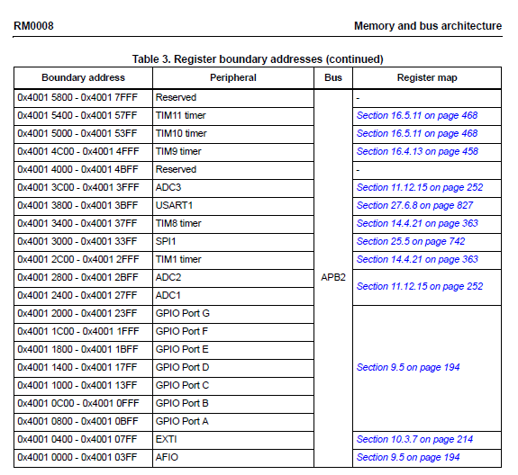
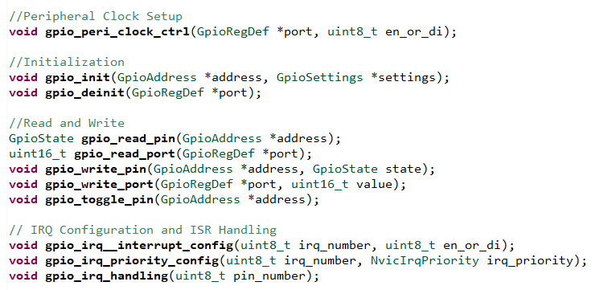
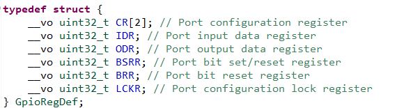
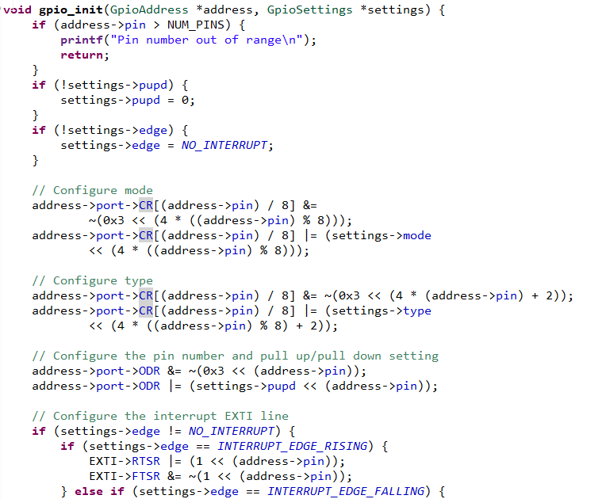
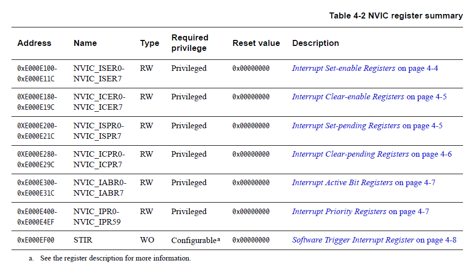
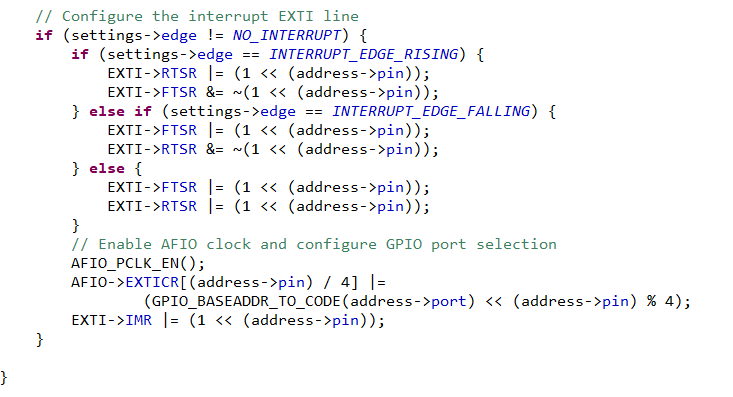

STM32F103C8
The STM32F103C8 is a well known STM32 (commonly known as the blue pill). It has an ARM Cortex-M3 processor on it. Below I briefly explain how I wrote the drivers for this MCU.

Writing the Drivers
The STM32 Header File
One of the first steps was figuring out which bus each peripheral I was going to write for was located. Then it was a matter of defining the address of their locations in the header file for easy access later on.
Above are examples of peripherals and their addresses for the STM32F103C8. I made sure that important periphearls such as AFIO,EXTI, and GPIO were included in the header file.
GPIO
The first, and probably the most trivial, driver to write was GPIO. Below I outlined the API for this driver.
To get the GPIO drivers to work, I simply had to enable the clock for a specific GPIO port, configure the settings by writing to certain GPIO registers. I defined these registers in the GPIO header file.
I then wrote to the port configuration register in the init function.
To output data, in my implementation for this API I wrote to the port output data register to toggle the state of a GPIO pin.
GPIO Interrupts
For setting up GPIO interrupts, I had to set up the NVIC registers in the ARM Cortex M3 to properly process interrupts from the EXTI lines of the STM32. This is based off of their IRQ numbers which I defined in the header file.
I also added to the original gpio_init function so that it would configure the registers for the EXTI lines and their settings, specifically which edge to trigger the interrupt. I also had to ensure that the EXTI line for the specific pin would be unmasked so the interrupt can be processed and sent to the NVIC.
SPI/I2C/USART
The other peripherals all follow a similar format of configuring settings by writing to specific registers and then setting up interrupts. Please view the source code and internal documentation for more details.